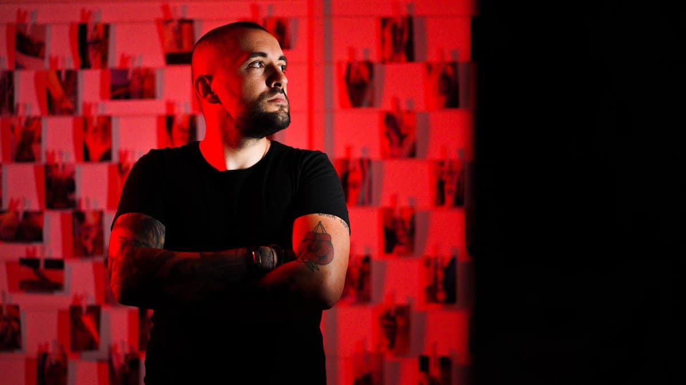
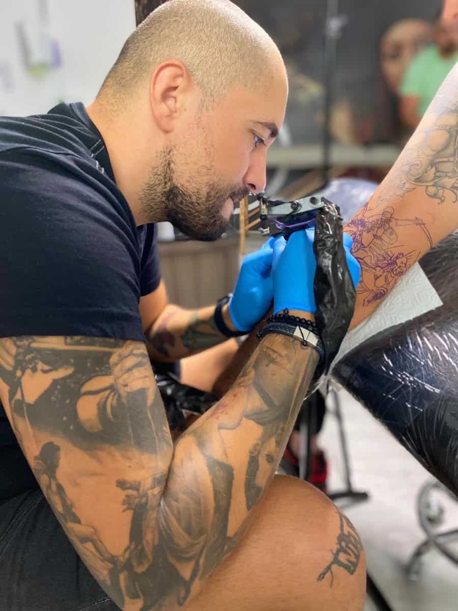

ARHIVA VIZUALĂ / RED TATTOO
Privește.
Mai aproape.
18 lucrări. 2 cadre din studio.
Din arhiva lui Cristi Nitu.
Portofoliul original.
Fotografiile salonului pot fi văzute momentan pe Instagram.Deschide portofoliul ↗Folosește săgețile ← →, trage imaginile sau glisează pe telefon. Apasă pe fotografia din față pentru a o mări.
Arhivă foto 2020 · RED TATTOO în Ora de Sibiu ↗

în piele.
ÎN SPATELE FIECĂREI LINII
Cristi Nitu.
Red Tattoo.
Un tatuaj începe cu o idee. Poate fi un desen clar, o imagine care nu-ți iese din minte sau ceva ce încă nu știi să explici.
Apoi vin alegerile: proporțiile, contrastul, locul pe corp. Le discutăm pe îndelete, până când desenul capătă sens pentru tine.
Spune-mi ideea taFiecare idee
își are limbajul.
Câteva puncte de plecare.
Direcția finală o alegem împreună.
01Black & grey
Lumină, umbră și profunzime. De la un detaliu discret la o compoziție amplă, contrastul dă formă poveștii.
Discută această direcție ↗02Fine line
O linie fină, spațiu și echilibru. Simboluri și compoziții aerisite pentru ideile care se exprimă prin simplitate.
Discută această direcție ↗03Custom design
Referințele sunt doar începutul. Discutăm elementele importante pentru tine și felul în care pot deveni o singură compoziție.
Discută această direcție ↗Întâi vorbim.
Apoi desenăm.
Nu trebuie să vii cu toate răspunsurile.
Ce ai în minte?
Trimite ideea, câteva referințe și zona în care îți dorești tatuajul. Spune-ne ce contează pentru tine în desen.
Un desen care ți se potrivește.
Discutăm direcția, dimensiunea și felul în care compoziția urmărește corpul. Fiecare alegere își are locul.
De pe hârtie, pe piele.
Stabilim detaliile ședinței. Înainte de începere discutăm poziționarea și ultimele ajustări ale desenului.
Ai ceva în minte?
Să creem
ceva.
O idee, câteva referințe și un mesaj.
Atât ne trebuie pentru început.